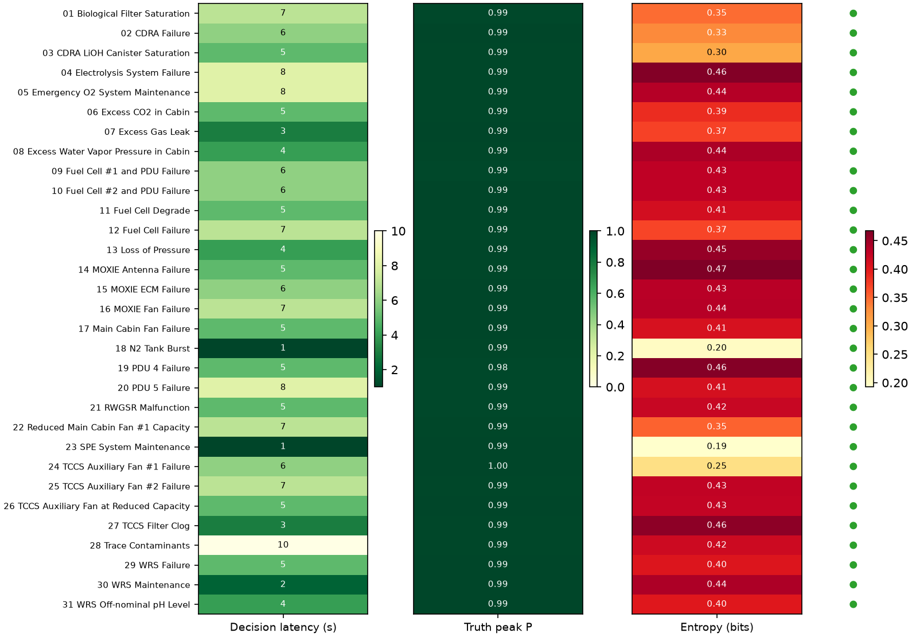

Closed-loop lstm-confidence · inject at 80 s · green ● = correct decision (31/31) · execute success 100%
31 / 31 correct · median decision latency 5 s · mean 5.4 s
Latency spans ~1–10 s; truth peak P stays ≈ 1.0 once the gate fires; entropy is low everywhere